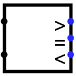

比较器
比较器
| 库： | 算术 |
| 引入版本： | 2.0 Beta 22 |
| 外观： |
 |
行为
根据数值类型属性，将两个值作为无符号值或二进制补码值进行比较。通常，其中一个输出为 1，另外两个输出为 0。
比较从每个数的最高有效位开始，并行向下进行，直到找到两个值不同的位置。但是，如果在此过程中遇到错误值或浮空值，则所有输出都将与该错误值或浮空值匹配。
引脚
- 西侧边缘，北端（输入，位宽与数据位宽属性匹配）
- 要比较的两个值中的第一个。
- 西侧边缘，南端（输入，位宽与数据位宽属性匹配）
- 要比较的两个值中的第二个。
- 东侧边缘，标记为>（输出，位宽 1）
- 若第一个输入大于第二个输入则为 1，若第一个输入小于或等于第二个输入则为 0。
- 东侧边缘，标记为=（输出，位宽 1）
- 若第一个输入等于第二个输入则为 1，若第一个输入不等于第二个输入则为 0。
- 东侧边缘，标记为<（输出，位宽 1）
- 若第一个输入小于第二个输入则为 1，若第一个输入大于或等于第二个输入则为 0。
属性
当组件被选中或正在添加时，Alt-0 至 Alt-9 可更改其数据位宽属性。
- 数据位宽
- 组件输入的位宽。
手形工具行为
无。
文本工具行为
无。
返回 库参考